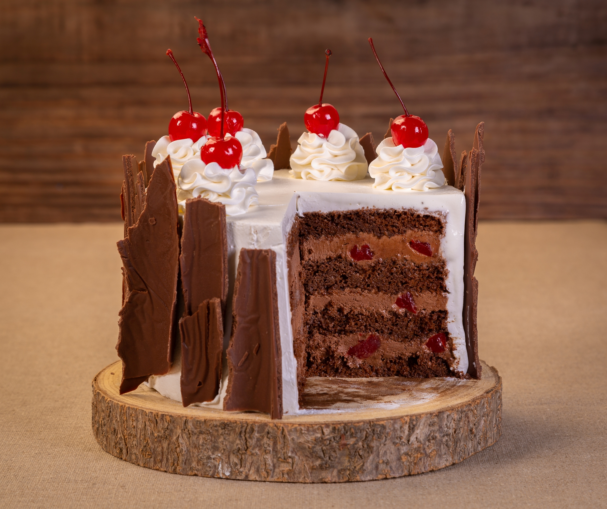

Bem vindo ao Receitas Gulosas

Bolo Kit Kat com Brigadeiro
Massa fofinha de chocolate cercada por barras crocantes de Kit Kat e coberta com muitos brigadeiros gourmet. Uma explosão de sabor para os amantes de chocolate.
Ver receita
Bolo Floresta Negra
O clássico alemão com camadas de pão de ló de cacau, recheio cremoso de chantilly com cerejas em calda e finalizado com placas de chocolate meio amargo.
Ver receita
Bolo de Leite Ninho com Morango
Massa branca leve e molhadinha, recheada com creme suave de Leite Ninho, finalizada com leite em pó polvilhado e morangos frescos selecionados.
Ver receita